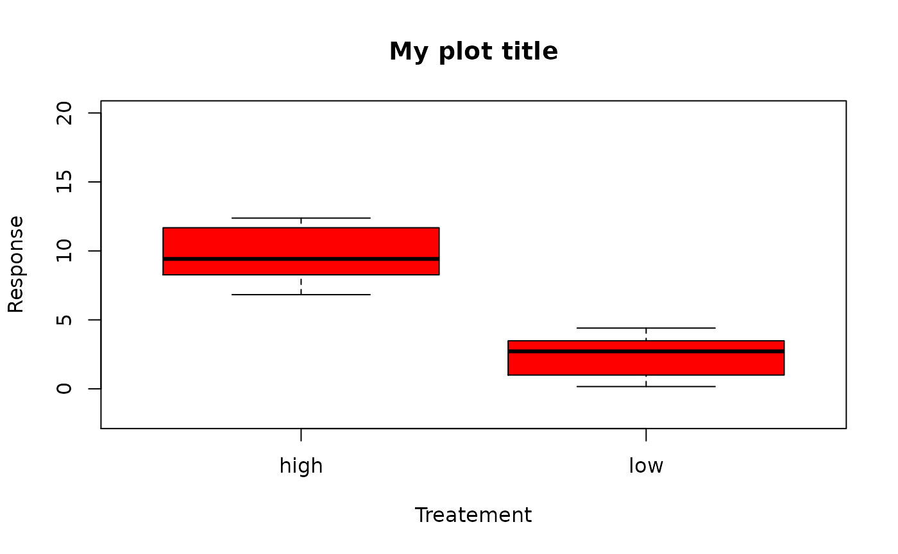
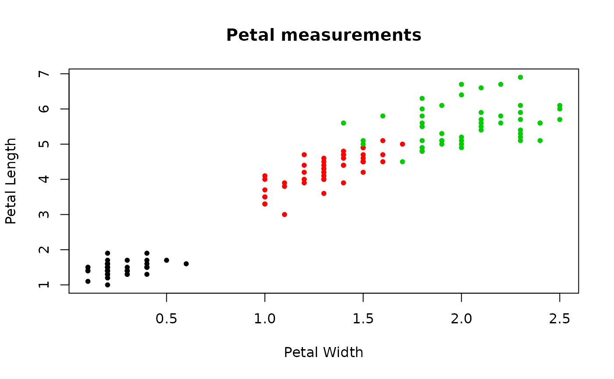

Introduction to using R - Part 3
Michael Stevens
2020-11-23
R_intro3.RmdIntroduction
In this final R tutorial we will work through the last subjects to get you up to speed before moving on to geographic profiling in R. This tutorial will focus on the following:
- Installing and using R packages
- Directories and reading data
- Data frames
- Plotting
- Getting help
Packages
In the previous tutorial we touched on a few of R's built in functions. We even saw an example of writing our own add function. You may find yourself in a position where you need a function that R's built-in library cannot provide you with and that may be too complex to write yourself. There are a number of R packages that can be downloaded that provide you with extra functions for many different uses. We will see in the next tutorial how to download RgeoProfile, a package for spatial analysis. Navigate to the "Packages" tab of the bottom right pane in Rstudio.

Here we can see all of the packages that are already been downloaded. To load a package we use the library() function. For example, to load the "raster" package, we would run:
## Loading required package: spThe raster package also loads another package for spatial analysis; the "sp" package. Notice the empty boxes down the left hand side of the "Packages" tab. Clicking on these boxes is another method for loading packages.

In order to install a package that is not in our system, we use the install.packages() function in the following way:
# install package
install.packages("INSERT PACKAGE NAME HERE")The install.packages() function will download the chosen package from CRAN, the online repository for R packages. The full list of R packages can be found via this link.
Directories and reading data
In addition to many built-in functions, R also comes with a variety of different data sets for a user to play around with when developing their R skills. To see the full list of datasets provided by R and other packages, run the data() function with blank parantheses.
# show list of built-in data sets
data() 
Here we can see a few examples, including the "mtcars" data set, this describes the ouput of road tests carried out on a series of popular motor vehicles. To load the "mtcars" data set, we simply return to the data() function:
# load mtcars data set
data(mtcars)
# view to first handful of rows of this data set using the head() function
head(mtcars)## mpg cyl disp hp drat wt qsec vs am gear carb
## Mazda RX4 21.0 6 160 110 3.90 2.620 16.46 0 1 4 4
## Mazda RX4 Wag 21.0 6 160 110 3.90 2.875 17.02 0 1 4 4
## Datsun 710 22.8 4 108 93 3.85 2.320 18.61 1 1 4 1
## Hornet 4 Drive 21.4 6 258 110 3.08 3.215 19.44 1 0 3 1
## Hornet Sportabout 18.7 8 360 175 3.15 3.440 17.02 0 0 3 2
## Valiant 18.1 6 225 105 2.76 3.460 20.22 1 0 3 1In addition to built-in data sets, a user will need to import their own data into R too. Rstudio makes this a little easier by allowing the user to choose the type of file when importing their data and where R can find said file. We can import a data file by going to File -> Import Dataset -> From ... and choosing from the options depending on your file type.

Rstudio will then open up a screen for you to navigate to the file. I've got an example file "my_data.txt" setup in my documents.


read.csv, read.table, R's built in data sets
Data frames
In the previous tutorial we looked at a few different data types in R such as vectors and matrices. We established that these vectors or matrices were made up of either numeric, logical or character values. Another common data type is the data frame. A data frame is of a similar structure to a matrix, except that each column of that matrix may be of a different class (numerical, logical or character). We've already seen an example of this in the "mtcars" data set. However, all the values in this data frame were numerical. Let's see an example of a data frame with different classes in them.
## Sepal.Length Sepal.Width Petal.Length Petal.Width Species
## 1 5.1 3.5 1.4 0.2 setosa
## 2 4.9 3.0 1.4 0.2 setosa
## 3 4.7 3.2 1.3 0.2 setosa
## 4 4.6 3.1 1.5 0.2 setosa
## 5 5.0 3.6 1.4 0.2 setosa
## 6 5.4 3.9 1.7 0.4 setosaHere we have loaded the iris data frame. This consists of the sepal and petal length and width of three different species of iris flower. Using the head() function we had look at the first few rows of our data frame. As we can see all the lengths and widths are numeric values whereas the species names are character values. When reading in data, R will automatically decide which of the three categories each column of your data falls under. To check this we can use the str() function.
# summarise each variable of the iris data
str(iris)## 'data.frame': 150 obs. of 5 variables:
## $ Sepal.Length: num 5.1 4.9 4.7 4.6 5 5.4 4.6 5 4.4 4.9 ...
## $ Sepal.Width : num 3.5 3 3.2 3.1 3.6 3.9 3.4 3.4 2.9 3.1 ...
## $ Petal.Length: num 1.4 1.4 1.3 1.5 1.4 1.7 1.4 1.5 1.4 1.5 ...
## $ Petal.Width : num 0.2 0.2 0.2 0.2 0.2 0.4 0.3 0.2 0.2 0.1 ...
## $ Species : Factor w/ 3 levels "setosa","versicolor",..: 1 1 1 1 1 1 1 1 1 1 ...So we can see, the data frame has 150 observations over 5 different variables. Notice that the final variable "Species" is reffered to as a "Factor". This is R's way of organising the character variables into categories. Factor w/ 3 levels referrs to the fact that the species variable has character values with 3 different categories. The "setosa", "versicolor", ...: 1 1 1 1 ... firstly shows R listing off each of these categories, these being the species names and then the numbers (1 1 1 1 1 1 ...) indicate which species each observation is associated with. So we know that the first few flowers are from the first category, in other words, the first species, which is "setosa".
Say we wanted to find out which flower species has the largest sepal width. The first place your mind might go is to use the max() or which.max() functions on the data frame. However we don't want to look for the maximum value of all the vraibles, only sepal width. So how do we access this variable from the data frame? If you look closely at the ouput of the str() function, you'll see R is giving us a hint.
## 'data.frame': 150 obs. of 5 variables:
## $ Sepal.Length: num 5.1 4.9 4.7 4.6 5 5.4 4.6 5 4.4 4.9 ...
## $ Sepal.Width : num 3.5 3 3.2 3.1 3.6 3.9 3.4 3.4 2.9 3.1 ...
## $ Petal.Length: num 1.4 1.4 1.3 1.5 1.4 1.7 1.4 1.5 1.4 1.5 ...
## $ Petal.Width : num 0.2 0.2 0.2 0.2 0.2 0.4 0.3 0.2 0.2 0.1 ...
## $ Species : Factor w/ 3 levels "setosa","versicolor",..: 1 1 1 1 1 1 1 1 1 1 ...Next to each of the variables is a $ sign. To access a variable from a data frame we write the name of the data frame followed by the $ symbol followed by the variable name we want.
# access sepal length from the iris data frame using the $ symbol
sepal_width_only <- iris$Sepal.Width
print(sepal_width_only)## [1] 3.5 3.0 3.2 3.1 3.6 3.9 3.4 3.4 2.9 3.1 3.7 3.4 3.0 3.0 4.0 4.4 3.9 3.5
## [19] 3.8 3.8 3.4 3.7 3.6 3.3 3.4 3.0 3.4 3.5 3.4 3.2 3.1 3.4 4.1 4.2 3.1 3.2
## [37] 3.5 3.6 3.0 3.4 3.5 2.3 3.2 3.5 3.8 3.0 3.8 3.2 3.7 3.3 3.2 3.2 3.1 2.3
## [55] 2.8 2.8 3.3 2.4 2.9 2.7 2.0 3.0 2.2 2.9 2.9 3.1 3.0 2.7 2.2 2.5 3.2 2.8
## [73] 2.5 2.8 2.9 3.0 2.8 3.0 2.9 2.6 2.4 2.4 2.7 2.7 3.0 3.4 3.1 2.3 3.0 2.5
## [91] 2.6 3.0 2.6 2.3 2.7 3.0 2.9 2.9 2.5 2.8 3.3 2.7 3.0 2.9 3.0 3.0 2.5 2.9
## [109] 2.5 3.6 3.2 2.7 3.0 2.5 2.8 3.2 3.0 3.8 2.6 2.2 3.2 2.8 2.8 2.7 3.3 3.2
## [127] 2.8 3.0 2.8 3.0 2.8 3.8 2.8 2.8 2.6 3.0 3.4 3.1 3.0 3.1 3.1 3.1 2.7 3.2
## [145] 3.3 3.0 2.5 3.0 3.4 3.0We now have the values we want. Let's find out which one is the maximum.
# which sepal length is largest
max_sepal_width_index <- which.max(sepal_width_only)
# find all the rest of the data for this observation
iris[max_sepal_width_index, ]## Sepal.Length Sepal.Width Petal.Length Petal.Width Species
## 16 5.7 4.4 1.5 0.4 setosaSo the 16th flower has the largest sepal width and this flower is a memeber of the "setosa" species.
Plotting
We've read in our data and now we would like to visualise it. R comes with many different built-in functions to plot and visualise our data. The most common function we use to do this is the plot() function. In its simplest form, the plot() function will produce a graph based on the object that is provided by a user:
As we can see, R has plotted our values on the y-axis, with the corresponding index on the x-axis. We only plotted a single object though, let's specify the x and y values ourselves:
# create two objects that will to plot on the x and y axis
some_x_values <- c(1, 4, 2, 3, 6, 5, 8, 2, 9, 10, 2, 4, 5)
some_y_values <- c(9, 7, 8, 6, 7, 8, 6, 7, 5, 6, 4, 5, 6)
# plot
plot(x = some_x_values, y = some_y_values)
R has automatically generated this plot window along with all of its characteristics such as: the limits of the x and y axis, the size of the points, the symbol for the points, the x and y labels and many more. All of the above and more can be customised. See the plot() function documentation for the extensive list but here are a few examples:
# plot
plot(x = some_x_values, # plot x values
y = some_y_values, # plot y values
xlim = c(0, 11), # set x limits
ylim = c(3, 10), # set y limits
pch = 4, # set point symbol
cex = 1, # set the size of points
col = "red", # set the colour of the points
xlab = "x values", # set the x axis label
ylab = "y values", # set the y axis label
main = "My plot title") # set the plot title
If we go back to our Iris data, let's plot sepal length against sepal width for each of the flowers.
# plot
plot(x = iris$Petal.Width, # plot width of petals on the x axis
y = iris$Petal.Length, # plot length of petals on the y axis
col = iris$Species, # set the colour of the points based on species
pch = 20, # set point symbol
cex = 1, # set the size of points
xlab = "Petal Width", # set the x axis label
ylab = "Petal Length", # set the y axis label
main = "Petal measurements") # set the plot title
Notice how we also coloured the points based on a categorical variable! In these plots, we have plotted continuous data against continuous data, hence R has responded accordingly and created a scatterplot when we called the plot() function. What if we switch the kind of data we are using? Let's say we want to plot the petal length for each species. We want to plot a continuous variable (petal length) against a categorical variable (species).
# plot petal length against flower species
plot(x = iris$Species,
y = iris$Petal.Length,
xlab = "Species", # set the x axis label
ylab = "Petal Length (cm)", # set the y axis label
main = "Petal Length for each species") # set the plot title
R has automatically recognised that we are plotting a continuous variable against a categorical one, hence it has generated a boxplot of our data.
All of these plots have been using the built-in R function plot() to visualise our data. There are many R packages out there for visualising data. One of the most popular being ggplot2. The ggplot2 package comes with extensive documentation but the syntax for plotting can be a bit tricky at first. I won't go through it here, but as an example, here's a piece of R code using the ggplot syntax that to make the make original scatterplot of the iris data.
# load ggplot package
library(ggplot2)
# plot petal length against flower species
ggplot() + geom_point(data = iris,
mapping = aes(x = Petal.Width,
y = Petal.Length,
col = Species),
size = 2.5) +
xlab("Petal Length (cm)") + ylab("Petal Length (cm)") +
ggtitle("Petal length vs petal width")
There are plenty of R blogs out there that can guide you when using ggplot2. Here's a link to the documentation.
Summary of R content
In summary, these introduction to R tutorials should have equipped you with what you need to start running the RgeoProfile package. In an incredibly short space of time we have covered:
- The Rstudio interface and saving a script
- Writing, running and commenting code
- Assigning and naming objects
- Arithmetic and logical operators
- Writing and using functions
- Different classes and data types
- Installing and using R packages
- Navigating directories and reading data
- Using data frames
- Using and plotting data sets
This is a lot of material! Like learning any new skill, your ability to code will develop slowly over time and will come with practice. So don't be too disheartened if it was hard to digest all of the content in these tutorials. You will always be able to return to these tutorials for a reminder of anything that's forgotten. I also encourage you to go searching for other R tutorials. The [extra resources] (https://michael-stevens-27.github.io/Rgeoprofile/articles/General_R.html) page under the "R basics" tab contains a small collection of other rsources to help develop your R skills.